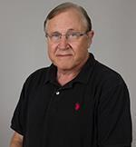
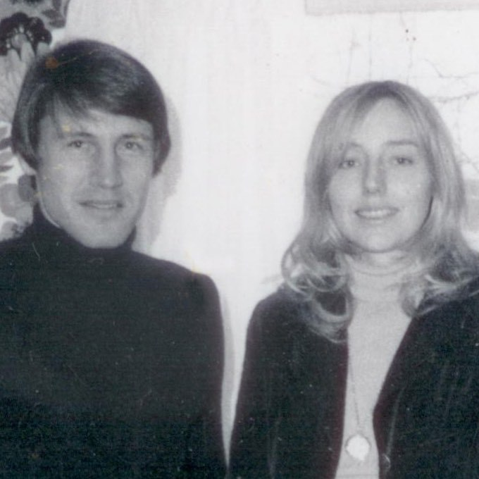
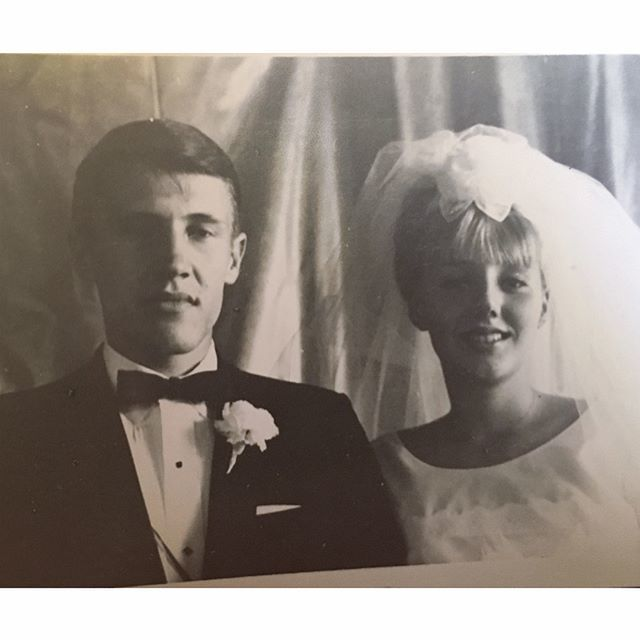
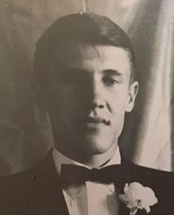
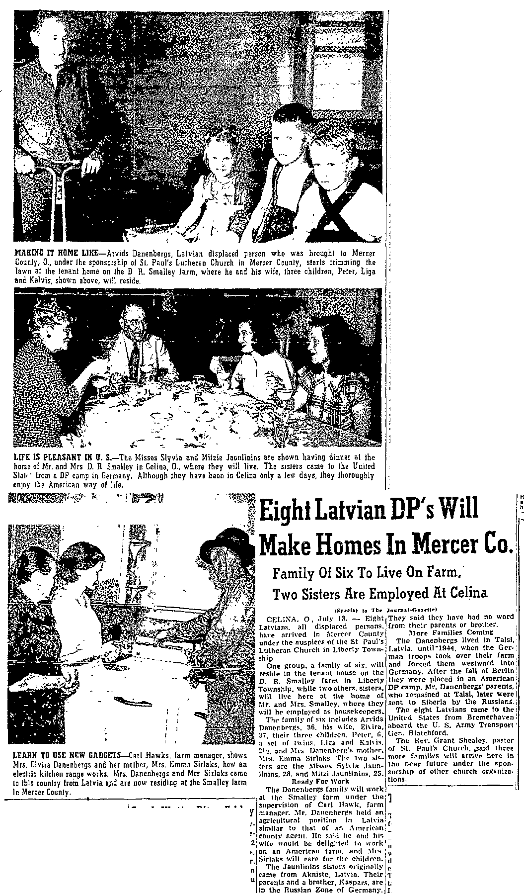

Peter Valentins Danenbergs b. 1942
Peter's father.
Living. As for every living relative on this site, the birth date is given by year only, and no current address is shown.
Also recorded as Peter Valentin Danenberg.
Peter Valentins Danenbergs was born in 1942 in Rīga, Vidzeme, Latvia2,3,4,5, the son of Arvīds Fricis Danenbergs and Elvīra Antonija Sirlaka3,44,45,46,47,48. He married Kathleen Diane Hall on 23 Apr 1966 in Los Angeles, California, United States (according to an online family tree)49. He arrived at Boston, Massachusetts, United States on 7 Jul 194930.
Peter Danenberg has been on the Biochemistry-faculty at USC for thirty years; from his faculty-bio:We have developed methods for quantitating gene expression by PCR and for rapid mutation detection by RNA conformational analysis. The latter technique is being used to investigate the role of mutations in acquired drug resistance. By using quantitative PCR, we have shown substantial variation among tumors in the degree of expression of genes of drug-targeted enzymes such as thymidylate synthase. Studies are under way to identify factors that alter the normal expression of these genes in cancer cells.He also enjoys basketball, science fiction, Latvian history and the creationism-evolution pseudo-debate.
Family
- Parents
- Arvīds Fricis Danenbergs 1913–1996 and Elvīra Antonija Sirlaka 1912–2011 documented
- Wife
- Kathleen Diane Hall b. 1947 · married on 23 Apr 1966 in Los Angeles, California, United States49
- Children
- Liga Irene Danenberg b. 1966 documented
- Peter Charles Danenberg Jr. b. 1978 documented
Life events
| Event | Date | Place and details |
|---|---|---|
| Born | 1942 | Rīga, Vidzeme, Latvia Preferred version: Ours (1942, Rīga). Raimonds's MyHeritage tree (2026) gives 1943, the 'about 1943' of a 1966 marriage index.2,3,4,5 |
| Born | 1943 | According to an online family tree6 |
| Lived | bet 1944 and Jul 1945 | Regensburg, Bavaria, Germany8 |
| Lived | bet Aug 1945 and 21 Jun 1949 | Haunstetten DP camp, Augsburg, Bavaria, Germany9 |
| Arrived | 7 Jul 1949 | Boston, Massachusetts, United States30 |
| Lived | 13 Jul 1949 | Liberty Township, Mercer County, Ohio, United States10,11 |
| Lived | bet 1951 and 1960 | Tiffin, Ohio, United States12 |
| Education | bet 1955 and 1956 | Bascom, Seneca County, Ohio, United States IN THE EIGHTH GRADE AT HOPEWELL-LOUDON SCHOOL, BASCOM, SENECA COUNTY, OHIO, in the school year 1955–56, in Mrs Patricia Hoffert's class. This is the first dated evidence of where the family lived in the Ohio years. Until now the only fixed point between the Boston landing of 7 July 1949 and his…15 |
| Education | bet 1956 and 1957 | Bascom, Seneca County, Ohio, United States Ninth-grade student at Hopewell-Loudon High School in Bascom, Seneca County, Ohio in the 1956–1957 school year (pictured in the 1957 Scarlet and Grey yearbook).16 |
| Education | 1964 | Cleveland, Ohio, United States B.S. in chemistry, Case Institute of Technology, Cleveland, Ohio, 1964. (Case Institute of Technology federated with Western Reserve University in 1967 to form Case Western Reserve University, which is why Peter remembers 'Case Western'.) Both independent sources agree on the school, subject and…17 |
| Work | bet 1964 and 1966 | Los Angeles, California, United States Assistant (teaching/research assistant) at the University of Southern California, 1964–66, while taking the M.S.20 |
| Work | bet 1966 and 1970 | Santa Barbara, California, United States Research assistant, University of California, Santa Barbara, 1966–70 (the doctoral years, in Daniel V. Santi's orbit).21 |
| Married | 23 Apr 1966 | with Kathleen Diane Hall Los Angeles, California, United States According to an online family tree49 |
| Education | 1967 | Los Angeles, California, United States M.S. in organic chemistry, University of Southern California, 1967. NOTE A CORRECTION: the existing note in research/press-web/findings.yaml reads this as UCLA. The Latvian reads 'D. Kalifornijas U Losandželosā' = Dienvidkalifornijas Universitāte (University of SOUTHERN California) in Los Angeles;…18 |
| Education | 1970 | Santa Barbara, California, United States Ph.D. in bioorganic chemistry, University of California, Santa Barbara, 1970. CONFLICT: USC's own 2011 faculty page says 'PhD 1970 Chemistry - University of Southern California'. I believe the encyclopaedia (and Peter's own recollection of Santa Barbara) over the USC page, because his three…19 |
| Work | bet 1970 and 1974 | Madison, Wisconsin, United States Researcher at the McArdle Laboratory for Cancer Research, University of Wisconsin–Madison, 1970–74, in Charles Heidelberger's laboratory (Heidelberger discovered 5-fluorouracil). USC's faculty page calls it a postdoctoral research fellowship 1970–1973. His papers of 1972–76 are co-authored with…22 |
| Note | bet 1971 and 2024 | Publication record, three independent counts: ResearchGate 356 publications and 20,055 citations (Oct 2026); research.com 191 publications 1971–2024, h-index 59, 13,130 citations in Biology and Biochemistry (Aug 2026), peak output 13 papers in 2002; PubMed 196 indexed papers 1971–2022. Semantic…31 |
| Work | bet 1974 and 1976 | Madison, Wisconsin, United States Scientist at the University of Wisconsin Clinical Cancer Center, 1974–76.23 |
| Note | bet 1974 and 1979 | Early bibliography as summarised in 1983: 20 scientific papers and 9 abstracts to 1980, alone and with others; a chapter in 'Antimetabolites in Biochemistry, Biology and Medicine' (1979); and, with Charles Heidelberger, a method for enzyme isolation in the handbook Methods in Enzymology (1974). He…32 |
| Work | 1976 | Los Angeles, California, United States Joined the Department of Biochemistry, University of Southern California School of Medicine, in 1976; associate professor (docents) there by 1983. He has been on the USC faculty ever since — fifty years in 2026.24 |
| Note | bet 1977 and 1978 | Los Angeles, California, United States He and Kathleen published together, as husband and wife, from the first years at USC — twenty years before Response Genetics. Two early joint papers: Danenberg PV, Danenberg KD, "Inhibition of hexokinase by multisubstrate analogs", Biochimica et Biophysica Acta 1977 (cited 21 times); and Danenberg…33 |
| Lived | bet 1978 and 1984 | La Cañada Flintridge, California, United States13 |
| Lived | 1 Jan 1988 | Pasadena, California, United States14 |
| Work | bet 1989 and 2022 | Los Angeles, California, United States Professor, Department of Biochemistry and Molecular Biology (renamed Biochemistry and Molecular Medicine c. 2016), Keck School of Medicine of USC, and member of the USC/Norris Comprehensive Cancer Center. His published affiliations, which PubMed records from 1989 on, trace the department's…25 |
| Note | bet 1994 and 2003 | Los Angeles, California, United States NIH principal investigator at the University of Southern California on two R01 grants, seven funded years in NIH RePORTER: R01 CA060859, 'Response determinants in advanced breast cancer', 1 Jul 1994 – 30 Jun 1997 (FY1994 $243,424; FY1995 $259,171; FY1996 $268,383); and R01 CA071716, 'Molecular…34 |
| Note | 6 May 2008 | Named as husband and wife (joint owners of Response Genetics shares)35 |
| Note | 2011 | Los Angeles, California, United States Research description in his own words on the USC faculty page: 'The work in this laboratory is directed at understanding the mechanisms by which cytotoxic anti-cancer drugs interact with their intracellular targets and the molecular factors and events determining response of tumors to drugs… By…36 |
| Note | 5 Apr 2011 | Los Angeles, California, United States Named inventor, with Kathleen Danenberg and Steven Swenson, on US patent 7,919,280 B2, 'Method for isolation of DNA, RNA and proteins from formalin-fixed paraffin-embedded tissue specimens', assigned to the University of Southern California; filed 27 Jul 2007, granted 5 Apr 2011. This is the…37 |
| Note | 26 Aug 2011 | Los Angeles, California, United States Published university contact details, as of the 2011 capture of his faculty entry: email [email omitted]; telephone [phone omitted]; fax [phone omitted]; office NOR 5318 (Norris Comprehensive Cancer Center); mail code 9176 HSC; personal page http://www-hsc.usc.edu/~pdanenbe/. The email still…38 |
| Work | bet 2015 and 2022 | Los Angeles, California, United States Still on the departmental faculty list through the department's renaming. USC's catalogue for 2020–21 (catoid 14) lists the Department of **Biochemistry and Molecular Medicine** with "Professors: Peter V. Danenberg; Vijay Kalra; …" beneath its chair and vice-chairs; the 2022–23 catalogue (catoid…26 |
| Note | 31 May 2018 | Los Angeles, California, United States Still publishing in his late seventies: a 2018 ASCO abstract, "Gene expression differences in cell-free RNA between…", carries "Peter V. Danenberg — USC Keck School of Medicine Norris Comprehensive Cancer Center, Los Angeles, CA" (J Clin Oncol 36, no. 15_suppl, e17077). His last PubMed-indexed…39 |
| Work | bet 2022 and 2026 | Los Angeles, California, United States Still listed among the Professors with primary appointments in the Department of Biochemistry and Molecular Medicine in the USC Catalogue for 2022–23 and again in the current 2026–27 catalogue (also under the Department of Cancer Biology). Department address 1975 Zonal Avenue, KAM 400, Los…27 |
| Note | bet 7 Jan 2025 and 8 Jan 2025 | Altadena, California, United States HE AND KATHLEEN LOST THEIR HOUSE IN THE EATON FIRE of 7–8 January 2025. Their daughter Līga set up a GoFundMe, "Help Danenberg's Rebuild after Lost Everything in Eaton Fire", and posted it to her school alumni group: "Hello friends, I created a GoFundMe to help my parents as they begin to rebuild…40 |
| Work | 2026 | Los Angeles, California, United States 'Emeritus Professor of Biochemistry at University of Southern California' on his own ResearchGate profile, which ResearchGate marks Verified ('Peter verified their affiliation via an institutional email'). The profile gives 356 publications, 20,055 citations and 16,323 reads as at 29 Oct 2026,…28 |
| Note | 2026 | Identifiers found for him: ResearchGate profile Peter-Danenberg-2 (rg:id AC:5516323), with a profile photograph at https://i1.rgstatic.net/ii/profile.image/278820537028623-1443487405017_Q512/Peter-Danenberg-2.jpg; research.com profile research.com/u/peter-v-danenberg; Semantic Scholar author…41 |
| Origin | Latvia According to the family's 2015 tree7 | |
| Work | Hearsay about Elvīra’s son (Peter’s father). LIVING. The surname Danenbergs does not occur in the memoir.29 | |
| Note | Australia His students and collaborators record what he was like to work with. Reginald V. N. Lord's doctoral thesis at the University of New South Wales thanks "Peter V. Danenberg, Professor of Biochemistry and Molecular Biology at USC", under whom "I was principally responsible for initiating the study of…42 | |
| Note | According to an online family tree43 |
Photographs




Records





Sources
- MyHeritage family tree 'Dzimta' of Peter's third cousin (his family site), member GEDCOM export of 26 Oct 2026, I500161 (person-6500161), GEDCOM lines 10064–10138.
NAME Peter Valentin /Danenberg/
His record match: U.S. Yearbooks, 1890-1979, https://www.myheritage.lv/research/collection-10568/us-yearbooks-1890-1979?itemId=156367140&action=showRecord: 'Hopewell-Loudon High School | School location: Bascom, Seneca County, Ohio, United States | Gadagrāmatas gads: 1956 | Lapa: 28& | lt;br />Teksts: "...David Creeger, Doyle Comer, Jerry Om- lor, John Park, Milo Bishop, David Hohman, Jerry King, Peter Danenbergs, Doris Depinet, Nancy Bushong. Eighth Grade MRS. PATRICIA HOFFE | RT Heidelberg College Grade Music..." | Related Yearbooks: These are additional yearbooks …'. His record match: U.S. Yearbooks, 1890-1979, https://www.myheritage.lv/research/collection-10568/us-yearbooks-1890-1979?itemId=156368158&action=showRecord: 'Hopewell-Loudon High School | School location: Bascom, Seneca County, Ohio, United States | Gadagrāmatas gads: 1957 | Lapa: 32& | lt;br />Teksts: "...David Hohman, Roger Zepernick, Dennis Hdiman, Larry Fruth, Gerry Qmlor, John Park, Doyle Comer, Peter Danenbergs, Gerald King, MUo Bishop, Chester Snyder. SECOND ROW: Mrs. L | owery, John Hoover, Roger Myers..." | Related Yearbooks: These are additional yearbooks from …'.
- AEF DP Registration Record, Danenbergs Pēteris, Reg. No. 901950275, DE ITS 3.1.1.1, folder DP0730, DocID 66841198.
DANENBERGS PĒTERIS | RĪGĀ, LATVIJĀ | DANENBERGS ARVĪDS | SIRLAKS ELVĪRA
LIVING. The DP card and the 1947 Regensburg list disagree on the birthplace.
- Declaration of Intention No. 134, Arvids Danenbergs, Mercer County Common Pleas, Celina, Ohio, 14 Aug 1950.
Peteris Danenbergs -- M--1942-Riga, Latvia-Rockford, Ohio
From both parents' declarations. Also in the 1950 census as 'Peter V', age 7. His own Ohio naturalization index entry is QG1L-RCDQ.
- Lēmums Nr. 3959 (13.09.2021.) un Lēmums Nr. 3957 (13.09.2021.), PMLP PSKN Nr. 3959 & Nr. 3957.
Pēteris Valentīns Danenbergs dzimis 1942 Latvijā, vecāki: Arvīds Danenbergs un Elvīra Danenberga, Latvijas pilsoņi, dzimšana reģistrēta 1942.
Translation: Pēteris Valentīns Danenbergs was born on 1942 in Latvia; parents: Arvīds Danenbergs and Elvīra Danenberga, Latvian citizens; birth registered 1942.
Born 1942 in Latvia to Arvīds Danenbergs and Elvīra Danenberga, Latvian citizens; birth registered 1942 (the decisions name no registry office). Latvian citizenship restored in 1993 (his 16 Dec 2019 email to the Embassy).
- Danenbergs, Pēteris Valentīns, Latvju enciklopēdija (1983).
Danenbergs Pēteris Valentīns (dz. 1942. … Rīgā) — bioķīmiķis. (T. — Arvīds D., agr.; m. — Elvīra, dz. Sirlaka, farm.)
Translation: Danenbergs, Pēteris Valentīns (born 1942 … in Rīga), biochemist. (Father: Arvīds D., agronomist; mother: Elvīra, née Sirlaka, pharmacist.)
Entry in the exile encyclopaedia, naming parents 'Arvīds D., agr.' and 'Elvīra, dz. Sirlaka, farm.'. It gives full birth date and education (B.S. chemistry, Case Institute of Technology, Cleveland, 1964; M.S. organic chemistry, UCLA, 1967; …). Middle name Valentīns. Date withheld here: living person.
- MyHeritage family tree 'Dzimta' of Peter's third cousin (his family site), member GEDCOM export of 26 Oct 2026, I500161 (person-6500161), GEDCOM lines 10064–10138.
BIRT · 1943
His record match: Kalifornija, Laulības, 1960 - 1985, https://www.myheritage.lv/research/collection-10202/kalifornija-laul%C4%ABbas-1960-1985?itemId=810201&action=showRecord: 'Peter V Danenbergs un Kathleen D Hall | Laulības: 23. Apr 1966 - Los Angeles, California, USA | Vīrs: Peter V Danenbergs | Dzimšana: Apmēram 1943 | Vecums: 23 | Sieva: Kathleen D Hall | Dzimšana: Apmēram 1947 | Vecums: 19'.
- Peter's tree, danenberg.sql, 2007–2015, personae 11, provenance.
- Kategorie III list of foreigners no longer resident, Landkreis Regensburg, Blatt 1, 29 May 1947, DocID 70184107.
Danenbergs | Peter | 1942 Schwanenberg | m | | — | 12. 1.45
Fled Latvia at age two in autumn 1944 with his parents and grandmother Emma via the Kurzeme coast, Ventspils, and Danzig to two farms in Landkreis Regensburg, Bavaria (listed on the 1947 Landkreis Regensburg foreigner list with sojourn date 12 January 1945), remaining there until summer 1945.
- AEF DP Registration Record, Danenbergs Pēteris, Reg. No. 901950275, DocID 66841198.
DANENBERGS PĒTERIS | 1942 RĪGĀ, LATVIJĀ | Assembly Center No. 5 | CAMP HAUNSTETTEN | Augsburg - Haunstetten. UNRRA TEAM 114
Lived with his parents, grandmother Emma, aunt Biruta, uncle Vitolds, cousin Ilze, and twin siblings Kalvis and Līga (born 1946) in the Latvian DP camp at Haunstetten near Augsburg, attending the camp's Latvian kindergarten until the family departed Haunstetten on 21 June 1949.
- Eight Latvian DP's Will Make Homes In Mercer Co., The Journal-Gazette (Fort Wayne, Indiana), 14 July 1949, p. 13.
The family of six includes Arvids Danenbergs. 36. his wife. Elvira. 37, their three children. Peter. 6, a set of twins. Liga and Kalvis. 2>2, and Mrs Dancnherg’s mother. Mrs. Emma Sirlaks
Translation: The family of six includes Arvids Danenbergs, 36, his wife, Elvira, 37, their three children, Peter, 6, a set of twins, Liga and Kalvis, 2 1/2, and Mrs. Danenbergs's mother, Mrs. Emma Sirlaks.
Residing at age 6 with parents Arvids and Elvira Danenbergs, twin siblings Liga and Kalvis (2 1/2), and maternal grandmother Emma Sirlaks at the tenant house on the D. R. Smalley farm in Liberty Township, Mercer County, Ohio.
- Household of Arwids F Danenbergs, Liberty Township, Mercer, Ohio.
Peter V Danenbergs: Race = White; Census 10 April 1950 @ Liberty Township, Mercer, Ohio, United States; Birth 1943 @ Latvia; Residence 1949; RelationshipToHead=Son; Age=7
After landing in Boston on 7 July 1949, he lived with his parents, twin siblings, and grandmother on the farm of sponsor Robert M. Hawk in Liberty Township, Mercer County, Ohio (Rockford mailing address), starting school and enumerated there as 'Peter V Danenbergs' (age 7) in the 10 April 1950 US Census.
- Tiffin, Seneca County, Ohio residence of the Danenberg family (1951–1960).
1953 Danenbergs Elvira Mrs pharm Mercy Hosp h23 Apple / 1956 Danenbergs Elvira (Arvids) pharmacist Mercy Hosp r RD 2 / 1958 Danenbergs Elvira Mrs pharm Mercy Hosp r RD 2 / 1959 Danenbergs Elvira Mrs pharm Mercy Hosp r RD 2 … Hopewell-Loudon High School … Gadagrāmatas gads: 1956 … Peter Danenbergs … Gadagrāmatas gads: 1957 … Peter Danenbergs
Moved with his family after about a year on the Hawk farm to Tiffin, Seneca County, Ohio (where his parents are recorded at [address omitted] in 1953 and on their [address omitted] Tiffin farm in 1956–1959 city directories), attending Hopewell-Loudon School in nearby Bascom before matriculating at Case Institute of Technology in 1960.
- [address omitted], La Canada, California 91011-3713 & Glendale High School Class of 1984.
Kathleen Diane Danenberg … Iespējamie radinieki: VārdsDzimšanaPeter Valentin Danenberg1942Liga Irene Danenberg1966Peter C Danenberg … [address omitted], La CanadaCalifornia 91011-3713, USA … Glendale HS Class of '84 (California) · Liga Danenberg
Resided with his wife Kathleen and children Līga and Peter at [address omitted], La Cañada Flintridge, Los Angeles County, California while daughter Līga attended nearby Glendale High School (graduating in 1984).
- [address omitted], Pasadena, California 91101-3903 (1 Jan 1988).
[address omitted], PasadenaCalifornia 91101-3903, USA1988.gada 1. Jan
Resided with his family at [address omitted], Pasadena, Los Angeles County, California on 1 January 1988 before moving to [address omitted] in nearby Altadena.
- Scarlet and Grey 1956 — Eighth Grade, Mrs Patricia Hoffert.
Eighth Grade MRS. PATRICIA HOFFERT Heidelberg College Grade Music, English … Top Row: David Creeger, Doyle Comer, Jerry Omlor, John Park, Milo Bishop, David Hohman, Jerry King, Peter Danenbergs, Doris Depinet, Nancy Bushong.
IN THE EIGHTH GRADE AT HOPEWELL-LOUDON SCHOOL, BASCOM, SENECA COUNTY, OHIO, in the school year 1955–56, in Mrs Patricia Hoffert's class. This is the first dated evidence of where the family lived in the Ohio years. Until now the only fixed point between the Boston landing of 7 July 1949 and his B.S. at Case in Cleveland in 1964 was the 1950 census, which has his father a farm hand in Liberty Township, Mercer County, in far western Ohio. Bascom is 80 miles north-east of that, south of Fostoria in Seneca County. His twin brother and sister Kalvis and Līga are in the two third-grade photographs of the same yearbook — the three grades (8, 3, 3) that their birth years (Sep 1942, Nov 1946 ×2) require. Hopewell-Loudon is a single K–12 school, so he may well have gone on to finish high school there, about 1960, before Case; that is a lead, not a fact.
- Peter Danenbergs — Hopewell-Loudon High School, Bascom, Ohio (1957 yearbook).
Hopewell-Loudon High School / School location: Bascom, Seneca County, Ohio, United States / Gadagrāmatas gads: 1957 / Lapa: 32 / Teksts: "...David Hohman, Roger Zepernick, Dennis Hdiman, Larry Fruth, Gerry Qmlor, John Park, Doyle Comer, Peter Danenbergs, Gerald King, MUo Bishop, Chester Snyder..."
Ninth-grade student at Hopewell-Loudon High School in Bascom, Seneca County, Ohio in the 1956–1957 school year (pictured in the 1957 Scarlet and Grey yearbook).
- Danenbergs, Pēteris Valentīns, issue 692453, article DIVL1174.
Danenbergs Pēteris Valentīns (dz. 1942 Rīgā) — bioķīmiķis. (T. — Arvīds D., agr.; m. — Elvīra, dz. Sirlaka, farm.) B. ASV Keisa techn. I Klīvlandē, Ohaio, ar B.S. grādu ķīm. 1964
Translation: Danenbergs, Pēteris Valentīns (b. 1942 in Rīga) — biochemist. (Father — Arvīds D., agronomist; mother — Elvīra, née Sirlaka, pharmacist.) Graduated in the USA from the Case Institute of Technology in Cleveland, Ohio, with a B.S. in chemistry in 1964
B.S. in chemistry, Case Institute of Technology, Cleveland, Ohio, 1964. (Case Institute of Technology federated with Western Reserve University in 1967 to form Case Western Reserve University, which is why Peter remembers 'Case Western'.) Both independent sources agree on the school, subject and year.
- Danenbergs, Pēteris Valentīns, issue 692453, article DIVL1174.
D. Kalifornijas U Losandželosā ar M.S. grādu organiskajā ķīm. 1967
Translation: the University of Southern California in Los Angeles with an M.S. in organic chemistry in 1967
M.S. in organic chemistry, University of Southern California, 1967. NOTE A CORRECTION: the existing note in research/press-web/findings.yaml reads this as UCLA. The Latvian reads 'D. Kalifornijas U Losandželosā' = Dienvidkalifornijas Universitāte (University of SOUTHERN California) in Los Angeles; the same abbreviation 'D. Kalifornijas U' is used later in the entry for the medical school where he has taught since 1976, which is certainly USC, and the entry writes plain 'Kalifornijas U Santa Barbarā' (University of California) without the D. USC's own faculty page independently gives 'MS 1967 Chemistry - University of Southern California'.
- Danenbergs, Pēteris Valentīns, issue 692453, article DIVL1174.
un Kalifornijas U Santa Barbarā ar Dr. grādu bioorganiskajā ķīm. 1970
Translation: and the University of California, Santa Barbara, with a doctorate in bioorganic chemistry in 1970
Ph.D. in bioorganic chemistry, University of California, Santa Barbara, 1970. CONFLICT: USC's own 2011 faculty page says 'PhD 1970 Chemistry - University of Southern California'. I believe the encyclopaedia (and Peter's own recollection of Santa Barbara) over the USC page, because his three earliest papers, all 1971 in Biochemistry, are with Daniel V. Santi on phenylalanyl-tRNA synthetase — Santi's UCSB chemistry-department subject — and because the USC page's education block is visibly sloppy ('Univeristy'). Recorded both ways; Peter can settle it.
- Danenbergs, Pēteris Valentīns, issue 692453, article DIVL1174.
Bijis D. Kalifornijas U asist. 1964-66
Translation: He was an assistant at the University of Southern California, 1964–66
Assistant (teaching/research assistant) at the University of Southern California, 1964–66, while taking the M.S.
- Danenbergs, Pēteris Valentīns, issue 692453, article DIVL1174.
Kalifornijas U Santa Barbarā pētn. asist. 1966-70
Translation: research assistant at the University of California, Santa Barbara, 1966–70
Research assistant, University of California, Santa Barbara, 1966–70 (the doctoral years, in Daniel V. Santi's orbit).
- Danenbergs, Pēteris Valentīns, issue 692453, article DIVL1174.
pētnieks Viskonsinas U Madisonā, Makārdla (McArdle) vēža pētn. lab. 1970-74
Translation: researcher at the University of Wisconsin in Madison, McArdle cancer research laboratory, 1970–74
Researcher at the McArdle Laboratory for Cancer Research, University of Wisconsin–Madison, 1970–74, in Charles Heidelberger's laboratory (Heidelberger discovered 5-fluorouracil). USC's faculty page calls it a postdoctoral research fellowship 1970–1973. His papers of 1972–76 are co-authored with Heidelberger.
- Danenbergs, Pēteris Valentīns, issue 692453, article DIVL1174.
Viskonsinas U klīniskā vēža pētn. centra zin. 1974-76
Translation: scientist at the University of Wisconsin clinical cancer research centre, 1974–76
Scientist at the University of Wisconsin Clinical Cancer Center, 1974–76.
- Peter V. Danenberg, Professor, Biochemistry & Molecular Biology, Keck School of Medicine.
Started at USC: 1976
Joined the Department of Biochemistry, University of Southern California School of Medicine, in 1976; associate professor (docents) there by 1983. He has been on the USC faculty ever since — fifty years in 2026.
- 196 indexed publications, 1971–2022, with author affiliations.
Department of Biochemistry and Molecular Medicine, Keck-USC School of Medicine, University of Southern California, 1975 Zonal Ave, Los Angeles, CA, United States
Professor, Department of Biochemistry and Molecular Biology (renamed Biochemistry and Molecular Medicine c. 2016), Keck School of Medicine of USC, and member of the USC/Norris Comprehensive Cancer Center. His published affiliations, which PubMed records from 1989 on, trace the department's renamings: 'Department of Biochemistry, School of Medicine, USC, Los Angeles 90033' (1989–90); 'a DNA match Jr. Comprehensive Cancer Center' (1992); 'Department of Biochemistry and Molecular Biology, USC/Norris Cancer Center' (1999–2004); '…Keck School of Medicine, 1441 Eastlake Avenue' (2014); 'Department of Biochemistry and Molecular Medicine, Keck-USC School of Medicine, 1975 Zonal Ave' (2018); 'Department of Biochemistry and Molecular Medicine, USC' (2022).
- Department of Biochemistry and Molecular Medicine — Faculty.
… Chair for Medical Education. Judd Rice, Associate Professor and Director of the BMM Master of Science Program. Professors: Peter V. Danenberg; Vijay Kalra …
Still on the departmental faculty list through the department's renaming. USC's catalogue for 2020–21 (catoid 14) lists the Department of **Biochemistry and Molecular Medicine** with "Professors: Peter V. Danenberg; Vijay Kalra; …" beneath its chair and vice-chairs; the 2022–23 catalogue (catoid 16) repeats it; the current 2026–27 catalogue (catoid 22) lists him among the Professors with primary appointments in the Department of Cancer Biology, Biochemistry and Molecular Medicine. NO ENDOWED OR NAMED CHAIR was found for him in any USC publication, and no departmental chairmanship: in every catalogue he is listed as a Professor, not as the chair. Peter should say whether he ever chaired the department or held a named chair, because the public record does not show one.
- Department of Cancer Biology — Biochemistry and Molecular Medicine, Faculty.
Professors: Peter V. Danenberg; Vijay Kalra; Frank S. Markland, Jr.; Robert Maxson; Pragna Patel; Michael Stallcup
Still listed among the Professors with primary appointments in the Department of Biochemistry and Molecular Medicine in the USC Catalogue for 2022–23 and again in the current 2026–27 catalogue (also under the Department of Cancer Biology). Department address 1975 Zonal Avenue, KAM 400, Los Angeles, CA 90089-9151.
- Peter DANENBERG | Emeritus Professor of Biochemistry | Ph.D. | University of Southern California.
Ph.D. · Emeritus Professor of Biochemistry at University of Southern California … 356 Publications … 20,055 Citations
'Emeritus Professor of Biochemistry at University of Southern California' on his own ResearchGate profile, which ResearchGate marks Verified ('Peter verified their affiliation via an institutional email'). The profile gives 356 publications, 20,055 citations and 16,323 reads as at 29 Oct 2026, with an earlier position of 'Professor, Department of Biochemistry and Molecular Biology'. This is where Peter's '~356 publications, ~19,900 citations' comes from.
- Ainas Sirlakas atmiņas ("Vīstuči"), Aina Jurciņa née Sirlaka, Priekuļi, 1998, p. 9, section "PAR PĒTERA UN MARIJAS CETURTO BĒRNU MĀRTIŅU".
Elvīras dēls esot profesors.
Translation: Elvīra’s son is said to be a professor.
Hearsay about Elvīra’s son (Peter’s father). LIVING. The surname Danenbergs does not occur in the memoir.
- Manifest of In-bound Passengers (Aliens), No. 27, USAT General Blatchford, Bremerhaven 28 June 1949 → Boston 7 July 1949, NAID 76075234, image 80 of 651, object 76075314, file 41253_B124264-01101.jpg, lines 4–8.
DANENBERGS Arvids Rockford, Ohio 36 Ma Md I-849016 Latvian … ADMITTED JUL 7 1949 BOSTON, MASS.
LIVING. Manifest 27, line 6; I-849018; age 6.
- Peter V. Danenberg, University of Southern California.
Peter V. Danenberg, a Biology and Biochemistry scholar from University of Southern California, has 191 publications recorded across 54 years, from 1971 to 2024. … H-index 59 … Citations 13130
Publication record, three independent counts: ResearchGate 356 publications and 20,055 citations (Oct 2026); research.com 191 publications 1971–2024, h-index 59, 13,130 citations in Biology and Biochemistry (Aug 2026), peak output 13 papers in 2002; PubMed 196 indexed papers 1971–2022. Semantic Scholar splits him over two author records totalling about 340 papers and 19,000 citations. Field: thymidylate synthase, 5-fluorouracil, fluorinated pyrimidines, and quantitative gene-expression predictors of chemotherapy response.
- Danenbergs, Pēteris Valentīns, issue 692453, article DIVL1174.
Līdz 1980 publ. gan viens, gan kopā ar citiem autoriem 20 zin. rakstus un 9 kopsavilkumus, nod. grāmatā Antimetabolits [sic] m Biochemistry; Biology and Medicine (1979). Kopā ar C. Heidelbergeru publ. metodes enzīmu izolēšanā rokasgrām. Methods of Enzymology (1974).
Translation: To 1980 he published, alone and with other authors, 20 scientific papers and 9 abstracts, and a section in the book Antimetabolites in Biochemistry, Biology and Medicine (1979). With C. Heidelberger he published a method of enzyme isolation in the handbook Methods in Enzymology (1974).
Early bibliography as summarised in 1983: 20 scientific papers and 9 abstracts to 1980, alone and with others; a chapter in 'Antimetabolites in Biochemistry, Biology and Medicine' (1979); and, with Charles Heidelberger, a method for enzyme isolation in the handbook Methods in Enzymology (1974). He had given papers at several international conferences in the USA. His subject: the clinical action of fluorinated pyrimidines against malignant tumours and viral disease, and work on antineoplastic and immunosuppressive agents.
- Inhibition of hexokinase by multisubstrate analogs.
Inhibition of hexokinase by multisubstrate analogs. Peter V. Danenberg, Kathleen D. Danenberg
He and Kathleen published together, as husband and wife, from the first years at USC — twenty years before Response Genetics. Two early joint papers: Danenberg PV, Danenberg KD, "Inhibition of hexokinase by multisubstrate analogs", Biochimica et Biophysica Acta 1977 (cited 21 times); and Danenberg PV, Danenberg KD, Biochemistry 17 (1978), 4018–4024, on the 5,10-methylene tetrahydrofolate dependence of thymidylate synthetase binding — the paper his own later work cites as reference 21. The joint bibliography runs on for decades.
- 7 projects, FY1994–FY2001, University of Southern California.
1R01CA060859-01A1 | UNIVERSITY OF SOUTHERN CALIFORNIA | PETER V. DANENBERG | RESPONSE DETERMINANTS IN ADVANCED BREAST CANCER
NIH principal investigator at the University of Southern California on two R01 grants, seven funded years in NIH RePORTER: R01 CA060859, 'Response determinants in advanced breast cancer', 1 Jul 1994 – 30 Jun 1997 (FY1994 $243,424; FY1995 $259,171; FY1996 $268,383); and R01 CA071716, 'Molecular prognostic indicators in esophageal cancer', 1 Mar 1998 – 31 Jul 2003 (FY1998 $409,084; FY1999 $398,092; FY2000 $409,109; FY2001 $421,027). Total $2,408,290 over the seven fiscal years shown. Funding agency: National Cancer Institute.
- 2008 proxy statement, Security Ownership of Certain Beneficial Owners and Management, note (4).
Includes of 426,108 shares of common stock jointly owned by Ms. Danenberg and her husband, Peter Danenberg.
Named as Kathleen Danenberg's husband in Response Genetics, Inc.'s 2008 proxy statement, which discloses that 426,108 of the shares she beneficially owned were held jointly with him. A public, sworn-to-the-SEC statement that the two are married, 42 years after the 1966 Los Angeles marriage licence already in the tree.
- Peter V. Danenberg — Research Description.
Research Topics: Cancer Cell Biology, Protein Chemistry/Enzymology, DNA & RNA
Research description in his own words on the USC faculty page: 'The work in this laboratory is directed at understanding the mechanisms by which cytotoxic anti-cancer drugs interact with their intracellular targets and the molecular factors and events determining response of tumors to drugs… By using quantitative PCR, we have shown substantial variation among tumors in the degree of expression of genes of drug-targeted enzymes such as thymidylate synthase.' Listed research topics: Cancer Cell Biology, Protein Chemistry/Enzymology, DNA & RNA. The same text, collected in 2015, is already in his bio in data/people.
- US7919280B2 — Method for isolation of DNA, RNA and proteins from formalin-fixed paraffin-embedded tissue specimens.
<meta name="DC.contributor" content="Kathleen Danenberg" scheme="inventor"> <meta name="DC.contributor" content="Peter V. Danenberg" scheme="inventor"> <meta name="DC.contributor" content="Steven Swenson" scheme="inventor">
Named inventor, with Kathleen Danenberg and Steven Swenson, on US patent 7,919,280 B2, 'Method for isolation of DNA, RNA and proteins from formalin-fixed paraffin-embedded tissue specimens', assigned to the University of Southern California; filed 27 Jul 2007, granted 5 Apr 2011. This is the family of methods on which Response Genetics was built.
- Peter V. Danenberg — faculty entry.
Send E-mail to: [email omitted] Webpage: http://www-hsc.usc.edu/~pdanenbe/ Telephone: [phone omitted] Fax: [phone omitted] Office: NOR 5318 Mail Code: 9176 HSC
Published university contact details, as of the 2011 capture of his faculty entry: email [email omitted]; telephone [phone omitted]; fax [phone omitted]; office NOR 5318 (Norris Comprehensive Cancer Center); mail code 9176 HSC; personal page http://www-hsc.usc.edu/~pdanenbe/. The email still matched what the family holds in 2026.
- Gene expression differences in cell-free RNA between… — author affiliations.
Peter V. Danenberg. USC Keck School of Medicine Norris Comprehensive Cancer Center, Los Angeles, CA;
Still publishing in his late seventies: a 2018 ASCO abstract, "Gene expression differences in cell-free RNA between…", carries "Peter V. Danenberg — USC Keck School of Medicine Norris Comprehensive Cancer Center, Los Angeles, CA" (J Clin Oncol 36, no. 15_suppl, e17077). His last PubMed-indexed paper is from 2022, at the age of 79.
- Līga Danenberg's GoFundMe post.
Hello friends, I created a GoFundMe to help my parents as they begin to rebuild after they lost their home in the Altadena fire. … GOFUNDME.COM — Donate to Help Danenberg's Rebuild after Lost Everything in Eaton Fire, organized by Liga Danenberg
HE AND KATHLEEN LOST THEIR HOUSE IN THE EATON FIRE of 7–8 January 2025. Their daughter Līga set up a GoFundMe, "Help Danenberg's Rebuild after Lost Everything in Eaton Fire", and posted it to her school alumni group: "Hello friends, I created a GoFundMe to help my parents as they begin to rebuild after they lost their home in the Altadena fire." The house is [address omitted], Altadena, independently recorded as their address in the tree and on Kathleen's own SEC filer record from 2007 to 2012.
- ORCID records for the surname Danenberg.
0000-0001-9455-8950 Peter Danenberg | [] ; 0000-0002-2109-3205 Kathleen Danenberg | []
Identifiers found for him: ResearchGate profile Peter-Danenberg-2 (rg:id AC:5516323), with a profile photograph at https://i1.rgstatic.net/ii/profile.image/278820537028623-1443487405017_Q512/Peter-Danenberg-2.jpg; research.com profile research.com/u/peter-v-danenberg; Semantic Scholar author 5263128 (258 papers, 15,805 citations, h 56) and 2246812453 (82 papers, 3,278 citations). ORCID 0000-0001-9455-8950 is registered to a 'Peter Danenberg' but is empty — no works, no affiliation, no email — so it CANNOT be shown to be his; recorded as a lead, not a fact.
- Acknowledgements.
Peter V. Danenberg, Professor of Biochemistry and Molecular Biology at USC. I was principally responsible for initiating the study of Barrett's diseases in…
His students and collaborators record what he was like to work with. Reginald V. N. Lord's doctoral thesis at the University of New South Wales thanks "Peter V. Danenberg, Professor of Biochemistry and Molecular Biology at USC", under whom "I was principally responsible for initiating the study of Barrett's diseases in…" — the Barrett's oesophagus and oesophageal adenocarcinoma gene-expression work that ran out of his laboratory through the 2000s. The same laboratory produced the 2000 Clinical Cancer Research paper "Colorectal Tumors Responding to 5-Fluorouracil Have Low Gene Expression Levels of Dihydropyrimidine Dehydrogenase, Thymidylate Synthase, and Thymidine Phosphorylase" (Salonga et al.), his most-cited paper, over 1,140 citations.
- MyHeritage family tree 'Dzimta' of Peter's third cousin (his family site), member GEDCOM export of 26 Oct 2026, I500161 (person-6500161), GEDCOM lines 10064–10138.
RESI
- Peter's tree, danenberg.sql, 2007–2015, parentages 40.
- AEF DP Registration Record, Danenbergs Pēteris, Reg. No. 901950275, DE ITS 3.1.1.1, folder DP0730, DocID 66841198.
(2) Family Name: DANENBERGS | Other Given Names: PĒTERIS | (6) Birthdate: 1942 | Birthplace: RĪGĀ, LATVIJĀ | (10) Full Name of Father: DANENBERGS ARVĪDS | (11) Full Maiden Name of Mother: SIRLAKS ELVĪRA | (20) Signature of Registrant: māte E. Danenbergs. | (24) REMARKS: māte: Danenbergs Elvīra - G 02081302 / tēvs: Danenbergs Arvīds - G 02081303
Translation: (2) Family Name: Danenbergs | Other Given Names: Pēteris | (6) Birthdate: 1942 | Birthplace: Rīga, Latvia | (10) Full Name of Father: Danenbergs Arvīds | (11) Full Maiden Name of Mother: Sirlaks Elvīra | (20) Signature of Registrant: mother E. Danenbergs. | (24) Remarks: mother: Danenbergs Elvīra - [ID number omitted] / father: Danenbergs Arvīds - [ID number omitted]
father: Arvīds Fricis Danenbergs; mother: Elvīra Antonija Sirlaka
- Lēmums Nr. 3959 (13.09.2021.) un Lēmums Nr. 3957 (13.09.2021.), PMLP PSKN Nr. 3959 & Nr. 3957.
Pēteris Valentīns Danenbergs dzimis 1942 Latvijā, vecāki: Arvīds Danenbergs un Elvīra Danenberga, Latvijas pilsoņi, dzimšana reģistrēta 1942.gada 18.septembrī.
Translation: Pēteris Valentīns Danenbergs was born on 1942 in Latvia; parents: Arvīds Danenbergs and Elvīra Danenberga, Latvian citizens; birth registered 18 September 1942.
father: Arvīds Fricis Danenbergs; mother: Elvīra Antonija Sirlaka
- Household of Arwids F Danenbergs, Liberty Township, Mercer, Ohio.
136 No No Danenbergs, Arwids F Head W M 37 Mar Latvia … Elvira A Wife W F 38 Mar Latvia … Peter V Son W M 7 Nev Latvia
father: Arvīds Fricis Danenbergs; mother: Elvīra Antonija Sirlaka
- Danenbergs, Pēteris Valentīns, Latvju enciklopēdija (1983), issue 692453, article DIVL1174.
Danenbergs Pēteris Valentīns (dz. 1942 Rīgā) — bioķīmiķis. (T. — Arvīds D., agr.; m. — Elvīra, dz. Sirlaka, farm.)
Translation: Danenbergs, Pēteris Valentīns (b. 1942 in Rīga) — biochemist. (Father — Arvīds D., agronomist; mother — Elvīra, née Sirlaka, pharmacist.)
father: Arvīds Fricis Danenbergs; mother: Elvīra Antonija Sirlaka
- MyHeritage family tree 'Dzimta' of Peter's third cousin (his family site), member GEDCOM export of 26 Oct 2026, family F500069 (I500161 Peter Valentins Danenbergs × I500165 Kathleen Diane Hall).
MARR 23 APR 1966 Los Angeles, California, USA
His record match: Kalifornija, Laulības, 1960 - 1985, https://www.myheritage.lv/research/collection-10202/kalifornija-laul%C4%ABbas-1960-1985?itemId=810201&action=showRecord: 'Peter V Danenbergs un Kathleen D Hall | Laulības: 23. Apr 1966 - Los Angeles, California, USA | Vīrs: Peter V Danenbergs | Dzimšana: Apmēram 1943 | Vecums: 23 | Sieva: Kathleen D Hall | Dzimšana: Apmēram 1947 | Vecums: 19'